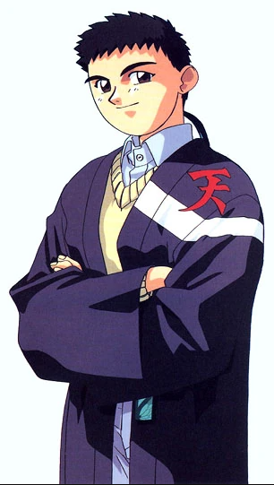
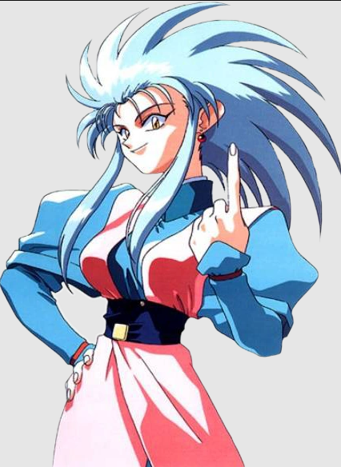
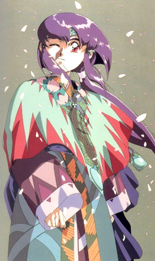
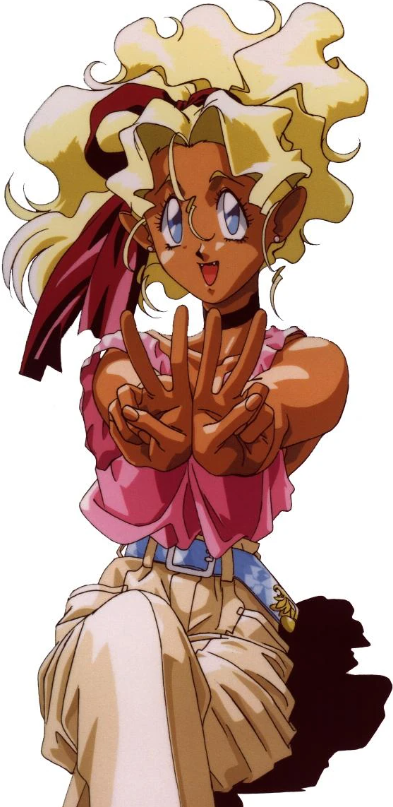
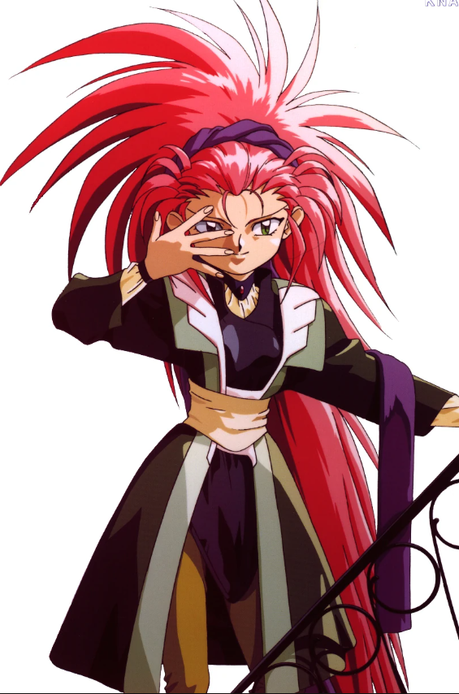

Somos uma página dedicada a apresentar para as pessoas o fantástico mundo de Tenchi Muyo! Aqui você fica por dentro de notícias,
eventos, conhece os personagens e um pouco da história deste fantástico anime.
Estamos localizados no pequeno vilarejo de Achika, em Tokyo. Com mais de 7 anos de experiência trazendo sempre informações relevantes
e conhecimentos extras sobre a franquia, a Project MUYO! tem conexões com mais de 4 mil usuários, que colaboram e fazem parte desta família.
Convidamos vocês a se juntarem a nós nessa épica aventura de descobertas e amizades no universo de Tenchi Muyo!!.
Noticias
Tenchi Muyo! Ryo Ohki tem estréia da quarta temporada pela Crunchyroll
Os quatro episódios da quarta temporada do OVA Tenchi Muyo! Ryo Ohki acabam de chegar à Crunchyroll! Os capítulos haviam sido lançados
entre novembro de 2016 e setembro de 2017 em DVD no Japão.
A trama gira em torno de Tenchi Masaki, um garoto comum que acidentalmente liberta a pirata espacial Ryoko, após ela passar séculos selada
em uma caverna. Percebendo que sua inimiga havia escapado, Ayeka também retorna para a Terra. Logo, outras garotas alienígenas aparecem e
decidem também morar na casa do jovem, junto com Ryoko e Ayeka, levando-o a descobrir mais sobre seu passado, seus poderes e uma nova ameaça
que se aproxima.
Algumas temporadas do anime foram veiculadas no Brasil tanto na Band quanto na Rede 21, no começo dos anos 2000.
Mitsuki Nakae será responsável pelos temas musicais do OVA de Tenchi Muyo! GXP Paradise Beginnings Arc
O site oficial de Tenchi Muyo! GXP Paradise Beginnings Arc, a vindoura série de seis OVAs da franquia Tenchi Muyo!, anunciou recentemente
que quem irá cantar seus os temas de abertura e encerramento será a cantora e seiyuu Mitsuki Nakae (Yumiko em AFTERLOST). Como cantora solo,
ela foi responsável anteriormente pelo tema de abertura de A Good Librarian Like a Good Shepherd e o tema de encerramento do segundo episódio
de Katanagatari (sob o pseudônimo Shoujo Byou).
O tema de abertura se chamará "Omoi, Hitohira" (“Um pensamento, uma pétala”, em tradução livre), enquanto o encerramento tem como título
“Paradice LOVE”. Nakae também foi responsável por escrever a letra de ambas as músicas. Hiroshi Nakamura ("Deji" Meets Girl e Oda Cinnamon
Nobunaga) foi responsável tanto pela composição das duas músicas, como pela trilha sonora dos OVAs.
Tenchi Muyo! (天地無用!? lit. O Céu e a Terra são Supérfluos!) é uma série de anime e mangá sobre um jovem chamado Tenchi Masaki.
A série original (Tenchi Muyo! Ryo-Ohki), teve seis episódios do tipo OVA, sendo lançada no Japão em 1991 e 1992. Obteve tanta popularidade
que foi criado um sétimo episódio (conhecido como Tenchi Special), e um outro capítulo denominado Mihoshi Special. Em 1994, um segundo OVA
foi criado e publicado, apresentando os capítulos 8 ao 13. Desde 2003 até 2005, uma terceira série de OVA foi lançada, com os episódios 14
ao 20, centrando-se na história das três deusas introduzidas no segundo OVA. Foram lançadas 3 séries para a TV chamadas "Tenchi Universe",
"Tenchi in Tokyo", e Tenchi Muyo GXP, todas elas com 26 episódios. Além disso houve uma série baseada nesse universo Tenchi chamada "Pretty
Sammy" que coloca como personagem principal a garota Sasami numa história totalmente diferente de Tenchi Muyo!, muito similar com Sailor Moon.
Foi transmitido pelo canal Band na sessão Band Kids durante cerca de 5 anos.
Personagens

Tenchi Masaki
Tenchi Masaki (柾木 天地, Masaki Tenchi ) é o principal protagonista da meta-série Tenchi Muyo!. Ele é um garoto normal até que várias
garotas alienígenas chegam em sua casa. Algumas ou todas as garotas, dependendo da continuidade, se apaixonam por ele. Ele, no entanto,
não aceita nenhuma de suas investidas. Como um cavalheiro e porque ele se importa muito mais com a unidade familiar do que com conquistas
românticas.

Ryoko Hakubi
Ryoko é uma pirata espacial semi-reformada que está perdidamente apaixonada por Tenchi Masaki , o protagonista principal. Ela sempre é
mostrada tendo um relacionamento muito competitivo com a Princesa Ayeka , que também tem um interesse romântico muito forte em Tenchi.
Ryoko tem habilidades diferentes entre as diferentes continuidades (o OVA, o Universo Tenchi e assim por diante), mas sua personalidade
agressiva e emocional tende a permanecer a mesma.

Ayeka Masaki
Embora os detalhes de sua personagem sejam diferentes entre as várias séries, Ayeka é tipicamente mostrada como a linda princesa do planeta
Jurai que se apaixonou pelo personagem-título, Tenchi Masaki . Ayeka é retratada como sendo bem-educada, tradicional e aristocrática, mas
também pode ser esnobe (seu sotaque adequado é evidência de sua educação aristocrática). Ela também pode ser muito feroz quando sente que
qualquer pessoa ou coisa com quem ela se importa está em perigo, como Tenchi ou sua irmã mais nova Sasami , de quem ela é muito protetora.
Sasami Masaki
Nas continuidades Tenchi , Sasami é a irmã mais nova de Ayeka e também é uma princesa do planeta Jurai . Dentro da família estendida Masaki,
Sasami geralmente assume o papel duplo de irmã mais nova/mãe. Ela pode ser a mais responsável do grupo e cuida de todas as tarefas de cozinha.
Ela tem uma velha travessa raramente vista dentro dela, no entanto, e tem grande prazer em enganar as meninas mais velhas.

Mihoshi Kuramitsu
Em Tenchi Muyo! Ryo-Ohki , Mihoshi é um membro da família Kuramitsu politicamente poderosa e antigamente um dos melhores policiais da Galaxy,
mas cujo desempenho declinou após um "incidente" não especificado. Depois de literalmente cair nos braços de Tenchi Masaki um dia durante uma
patrulha malfadada, Mihoshi se muda para a casa dele e de sua família recém-estendida.

Washu Hakubi
Como os outros personagens, sua personagem difere dependendo da continuidade, embora às vezes ela exiba uma série de poderes inatos que
raramente usa, preferindo resolver problemas com razão ou tecnologia. Em todas as encarnações da série, Washu também demonstrou ser um tanto
prudente e geralmente é mais difícil de enganar do que Tenchi ou as outras garotas, o que torna mais difícil para ela cair em uma armadilha
inimiga. Em todas as três séries Tenchi, Washu cria um laboratório interdimensional no armário da casa Masaki, embora seu laboratório seja
muito maior na série OVA do que em ambas as séries de TV.
)
format(webp))